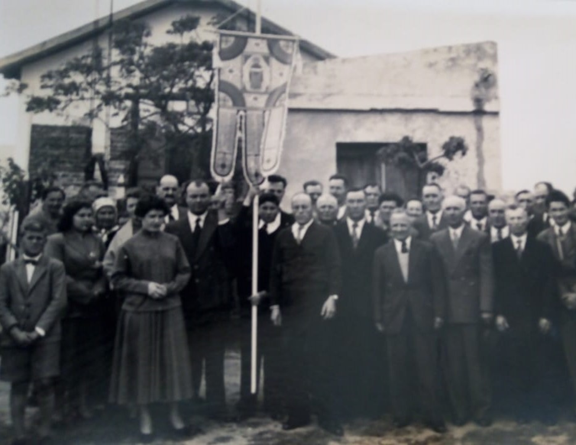
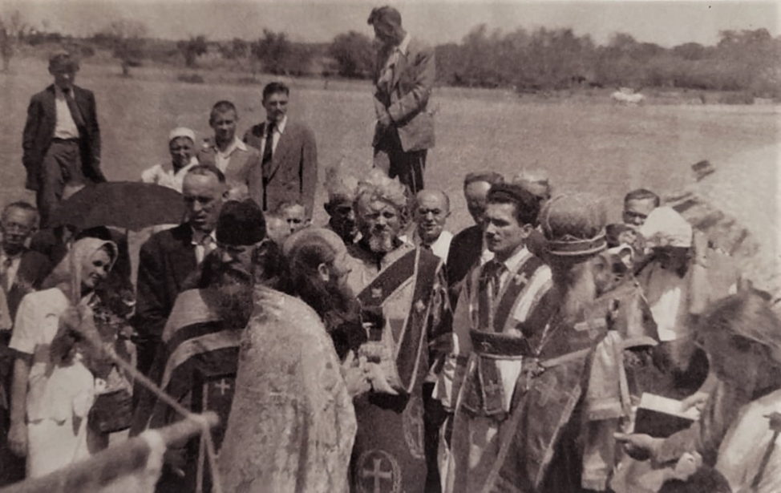
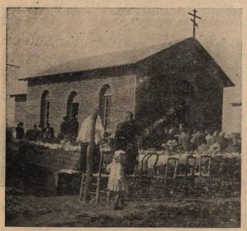
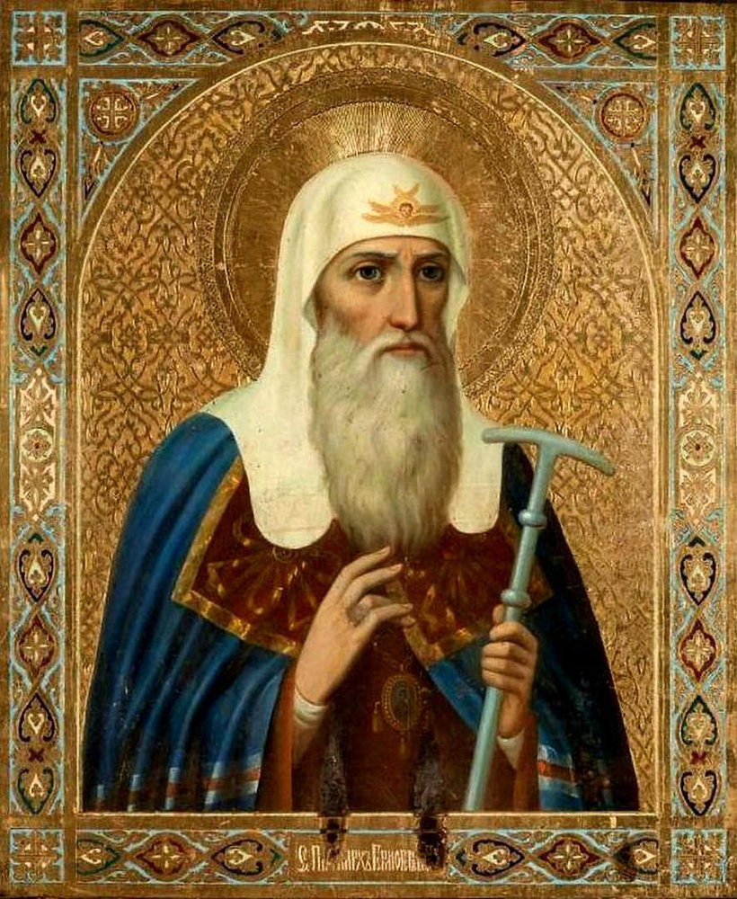
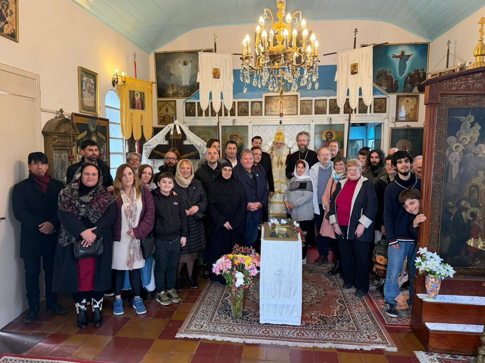
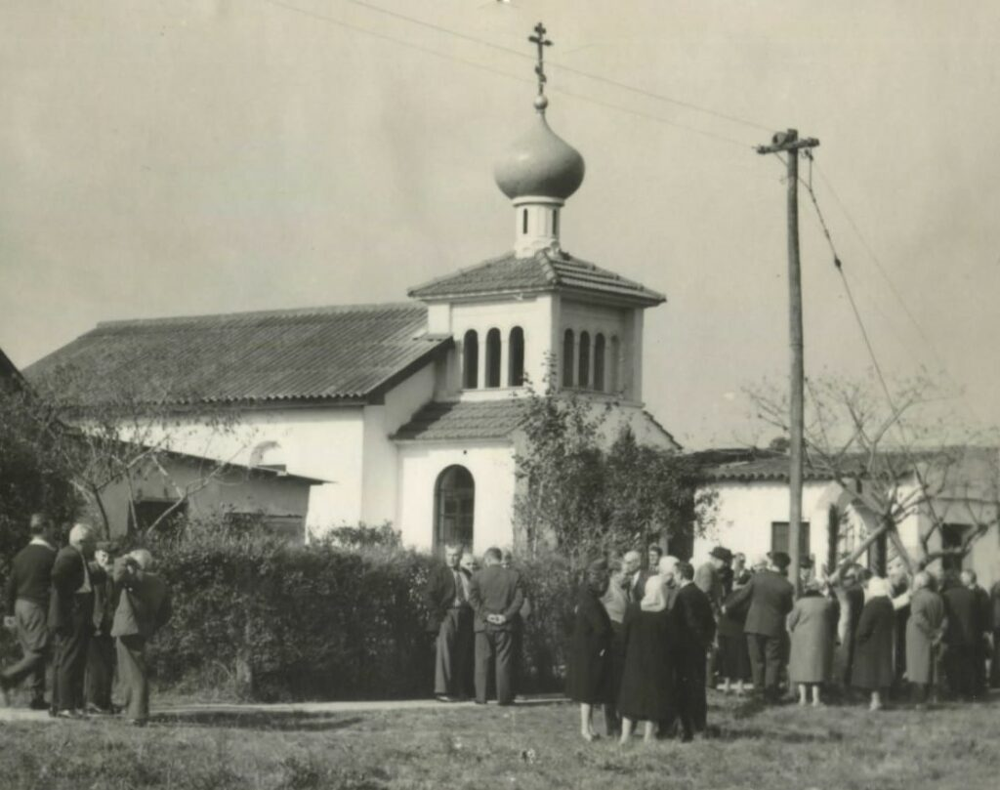
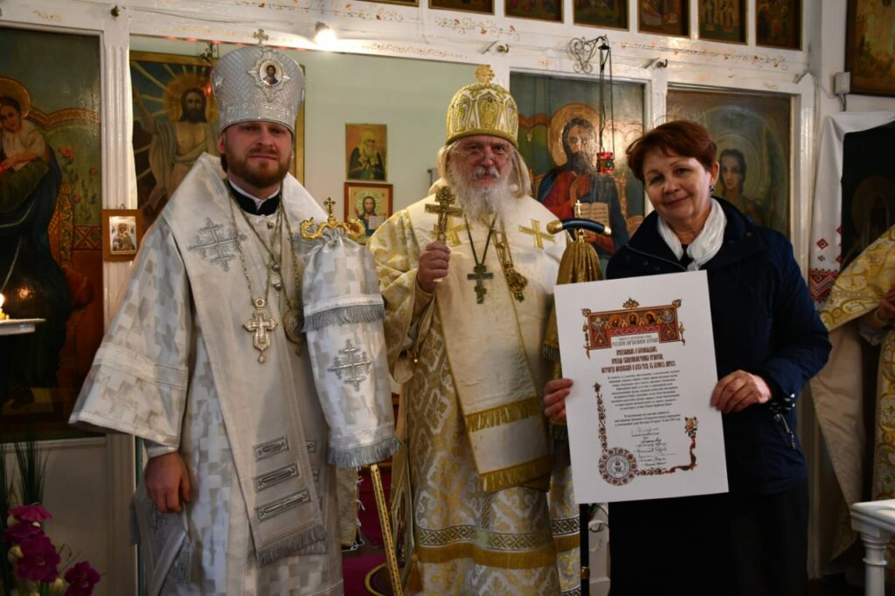

📜 Nuestra Historia

El 25 de mayo de 2022, la Diócesis Sudamericana de la Iglesia Rusa en el Extranjero celebró el 70.º aniversario de la consagración de la Iglesia del Sagrado Orden del patriarca Hermógenes en el conurbano bonaerense de Quilmes. En este gran asentamiento suburbano industrial, durante los años 40, surgió toda una «colonia rusa» de emigrantes de la posguerra que venían de distintas partes de la Unión Soviética. Entre ellos se encontraban rusos, ucranianos, polacos, judíos y representantes de otras nacionalidades. También se asentó aquí un número significativo de antiguos cosacos, que formaron la primera comunidad ortodoxa, reuniéndose en una casa particular y realizando oraciones conjuntas de manera secular.
Los cosacos hicieron pendones, que luego se convertirían en propiedad de la parroquia, formalmente constituida en 1948. Ese año llegaron a la Argentina especialmente muchos emigrantes de habla rusa, y entre ellos se hallaba el padre Timoteo Soin, también cosaco de nacimiento. Fue el primero en guiar como sacerdote al rebaño local, incluso antes de la construcción de la iglesia, celebrando los oficios en lugares privados.

En 1950, la parroquia recibió la visita del arzobispo Ioasaph, recién llegado a la Argentina, quien, al conocer la situación de la comunidad, dio su bendición para la adquisición de un terreno destinado a la construcción de una iglesia. Al mismo tiempo, fue nombrado rector permanente el padre Nikolái Cherkashin.
En 1951 se compró el terreno y el 2 de marzo de 1952 el arzobispo Ioasaph realizó la colocación solemne de la piedra fundamental del nuevo templo, cuya obra principal se completó en menos de dos meses.
El 1 de mayo, el arzobispo visitó la iglesia en construcción, donde fue recibido con alegría por el padre Nikolái, los feligreses y el coro parroquial. En las crónicas de aquellos años leemos sobre este evento:
«Después de orar y saludar cordialmente, el arzobispo entró al templo en construcción, examinó los trabajos en curso y agradeció a quienes realizaban su labor con energía y desinterés; deseando manifestar su reconocimiento, hizo una donación personal para la terminación del templo. Luego, Vladyka visitó al mayordomo de la iglesia, N. F. Griba, y a la hermana mayor de las voluntarias, S. N. Protopopova, donde se ofreció una comida. Con su característica sencillez y cordial sensibilidad, Vladyka pasó varias horas conversando con los feligreses y, por la noche, se despidió con emoción del padre rector y los miembros de la parroquia, partiendo de regreso a Buenos Aires.»
Veinticuatro días después de la visita del arzobispo, la iglesia estaba lista para su bendición.

El padre Nikolái Cherkashin, en el ejemplar n.º 13 del mes de mayo de 1952 de la revista Pravoslavnoye Slovo, notificó a todos los ortodoxos el próximo evento, escribiendo:
«El domingo 25 de mayo de este año, el arzobispo Ioasaph consagrará solemnemente la nueva iglesia en honor a san Hermógenes en el asentamiento ruso de Quilmes. Todos los donantes, clérigos de todas las iglesias con sus coros y todos los compatriotas ortodoxos que simpatizan con la obra de construir un templo de Dios están invitados a esta gozosa celebración para la parroquia...»
Y ya en el ejemplar n.º 25 de la misma revista, leemos que el 25 de mayo de 1952 en Quilmes «se llevó a cabo una grandiosa celebración con una gran concurrencia de creyentes». La Divina Liturgia, seguida de un servicio de oración y una procesión alrededor de la iglesia, estuvo a cargo del arzobispo Ioasaph, copresidida por los arciprestes Nikolái Kolchev, Timofey Soin, Nikolái Masich, el rector de la iglesia —presbítero Konstantin Krasilnikov— y el diácono Vasili Karklin.
El arcipreste Nikolái Masich pronunció unas sentidas palabras, mencionando los servicios prestados a la patria por el gran jerarca de la tierra rusa, el patriarca Hermógenes —que ocupó el trono patriarcal en un momento difícil y convulso (1607-1612)— y el bendito príncipe Dimitri Pozharski, quien derrotó a los polacos, liberó Moscú y señaló a la Duma de los boyardos la necesidad de elegir para el reino a Miguel Fiódorovich Románov.

El santo patriarca Hermógenes, que terminó sus días como mártir en las mazmorras del Monasterio de Chúdov, no tuvo miedo de contradecir al poder secular ilegítimamente establecido por la intervención polaca, mientras que la mayoría de los entonces jerarcas se sometieron a ese poder por temor. El patriarca llamó a levantarse contra la ocupación polaca defendiendo la fe ortodoxa. Inspiró al pueblo ruso con sus cartas a formar una milicia popular que, finalmente, después de la muerte del santo patriarca, expulsó a los invasores polacos.
El templo fue bendecido el 25 de mayo, día en que se conmemora al hieromártir Hermógenes según el calendario gregoriano. Y esta fecha no fue elegida por casualidad: el 25 de mayo toda Argentina celebra su fiesta nacional —el Día de la Revolución de Mayo (ocurrida en 1810, que marcó el inicio de la guerra por la independencia del país)—. Es una fiesta nacional, lo que significa que, independientemente del día de la semana en que caiga, será un día libre cualquier año, y los quilmeños, junto con los visitantes de la Capital y otros lugares, siempre tendrán la oportunidad de reunirse en la fiesta patronal en honor al santo mártir Hermógenes.

En el momento de su santificación en 1952, el templo ya contenía varios iconos pintados por el padre Nikolái Masich. A su vez, el padre Nikolái Kolchev entregó solemnemente a la nueva iglesia una partícula de las reliquias de san Hermógenes, que había traído desde Rusia.
La descripción de la festividad, que nos ha llegado en una revista ortodoxa, transmite una atmósfera de genuina alegría e inspiración. Alrededor de la iglesia se extendía una calle sin pavimentar con casitas humildes, pero en ella se reunía un número inusualmente grande de personas. Al llegar el obispo, los niños arrojaron flores a sus pies; un coro combinado de voces amigables entonó cánticos pascuales, complementados por el repique de «campanas» realizado en una pequeña campana y una barandilla suspendida. No había ninguna cúpula sobre el templo, pero sí una cruz ortodoxa de ocho puntas que se elevaba muy por encima del techo. Después del oficio, todos disfrutaron de una comida hospitalaria en mesas colocadas alrededor de la iglesia.

Años más tarde, el templo —construido entre 1958 y 1965— fue enlucido y decorado con un campanario coronado por una cúpula en forma de cebolla. En los alrededores crecieron pequeñas casas para el sacerdote y para los modestos almuerzos de la feligresía. Tiempo después se construyó un cerco alrededor de la iglesia.
A lo largo de los años, la iglesia ha tenido varios rectores, y la diócesis ha tenido distintos obispos que la visitaron en su fiesta patronal. Aquí hubo una escuela parroquial, donde se enseñaba catequesis, historia y el idioma ruso. Todo esto forma parte de la crónica del primer y único templo de la Iglesia Rusa en el Extranjero dedicado al santo mártir Hermógenes, patriarca de Moscú y de toda Rusia.

Durante la solemne celebración de los 70 años del templo, Su Eminencia Juan, obispo de Caracas y Sudamérica, explicó en su homilía la razón principal por la cual san Hermógenes fue canonizado:
«San Hermógenes vivió una época muy compleja y difícil, denominada "Tiempos Turbulentos". Además de haber sido un santo varón, ha sido considerado un héroe nacional, pero esto último no era su objetivo, y no fue glorificado por ello; simplemente sucedió casi por casualidad. Fue canonizado, siendo patriarca de la Iglesia Ortodoxa Rusa, por defender la fe ortodoxa y el Evangelio.
«En aquellos tiempos difíciles, los políticos buscaban de diferentes maneras su propio beneficio o intentaban adivinar qué podría ser mejor para el pueblo, para el país. También hay que tener en cuenta que, en aquellos días, la información —y también la desinformación— no eran tan accesibles como lo son hoy para nosotros, lo cual dificultaba la resolución del problema.
«Para san Hermógenes todo fue sencillo, porque él, como santo de Dios, se adhirió al Evangelio. Encontrar la verdad política es difícil o imposible, pero la verdad del Evangelio siempre está ahí y disponible. Y vivió en el Evangelio, sufrió por el Evangelio. Fue torturado porque defendía la ortodoxia, no una cuestión política o nacional. Sufrió por Cristo y por su Evangelio, y así nos da un claro ejemplo e imagen de cómo debemos comportarnos.»